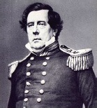

ABD Tuğamirali Matthew Perry (1794-1858) ve dört savaş gemisinden oluşan filo, 1853’te Tokyo Körfezi’ne demir attığında, kavrayışının da ötesinde gizemli bir bölge buldu. Perry’nin Amerikan keşif seferi ile karşılaşan Japonya, uzun zamandır kendisini dış dünyaya kapatmıştı. Avrupa ve Amerika Birleşik Devletleri, on dokuzuncu yüzyılın başlarında hızla sanayileşirken, Japonya her şeyden uzakta bir ada olarak kalmıştı. Batılılar için dünyanın keşfedilmemiş bir bölgesiydi. Bir ‘shogun’ ve samuray savaşçılarından oluşan bir feodal sistem tarafından idare edilen Japonlar, Perry gelmeden önce yabancılarla sadece kısıtlı bir temas kurmaya izinliydiler.

Amerikan ticaretinin ulaştığı yerleri genişletmeye hevesli Başkan Millard Fillmore, Perry’i Japonya’ya, ‘shogun’u Amerika Birleşik Devletleri ile ticarete izin vermesi için korkutmak üzere yolladı. Amerikan savaş gemilerinin uzun namlulu silahları ile karşılaşan ‘shogun’un çok az seçme şansı vardı. Anlaşma imzalandı ve diğer Batılı güçlerle de benzer anlaşmalar da bunu takip etti.
‘Shogun’un başlangıçtaki gönülsüzlüğüne rağmen, Japonya modernleşmeyi büyük bir hevesle benimsedi. Elli yıl içinde bu ortaçağ adası, kendisini büyük endüstriyel bir güce
dönüştürmüştü. Dizginlenemeyen bir atılımla Japonya, askerî kuvvetlerinde ve ekonomik gücünde birçok büyük Batılı güçle arayı kapattı ve sonunda onları da geçti. Yirminci yüzyılın başlarında Japonya, Avrupalı büyük bir güç olan Rusya’ya karşı savaşa girişebildi ve kazandı.
Perry, 1812 Savaşı’nın bir gazisiydi ve uzun süren denizcilik kariyerinde onu meşhur yapan görevini tamamlamadan önce köle tüccarları ve korsanlarla savaştı. Mirası, tartışmalı hâldedir. Perry’nin keşif seferi, Japonya’yı dünyadaki en güçlü ve en zengin uluslardan birine dönüştüren bir olaylar zincirini tetiklemiştir, ama birçok Japon Batı’nın Japonya’yı yaşam tarzını değiştirmeye zorlayışının aşağılayıcı niteliğine halen öfke duymaktadır.
EK BİLGİLER:
1. Perry, Rhode Island, Newport’luydu. Her yıl şehir onun yolculuğunu bir Kara Gemiler Festivali (Japonlar’ın Amerikan gemilerini tarif etmek için kullandıkları isme ithafen) ile kutlamaktadır.
2. Perry’nin keşif gezisinden geriye kalan Amerikan bayrağı saklandı ve o bayrak Japonlar 1945’te II. Dünya Savaşı’nın sonunda zırhlı gemilerinde teslim oldukları zaman USS Missouri’de dalgalanmaktaydı.
3. Perry’nin büyük kardeşi Oliver Hazard Perry de İngilizlere karşı 1812 Savaşında bir savaş gemisine komuta eden bir denizcilik kahramanıydı.